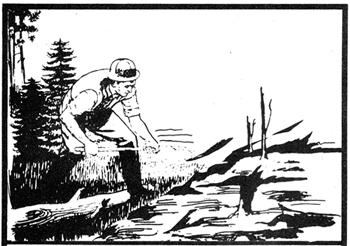
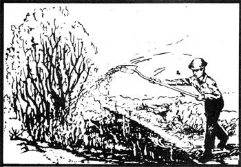
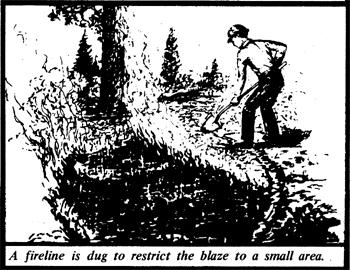

The country dweller has to be many things: a bit of a doctor, a bit of a plumber, a bit of all those other specialists who handle' emergencies for city folk. Well, I can't give you a Red Cross first aid course, and I certainly can't offer you police protection but there is one type of mishap which I might be able to help you deal with: wildfire.
While three years of fighting fires with the U.S. Forest Service hardly makes me an expert, the experience has given me the basic knowledge I need to deal with most types of rural or backwoods blazes and I'll try to pass on enough of what I've learned so that you'll know what to do if flames spring up on your property. If you live more than a few minutes from a fire station, the information might come in handy someday.
No, this isn't going to be the same talk the fire chief gave your class back in fourth grade. If you don't already know how to store oily rags, gas cans, and matches safely, I'm sure your rural fire department will be glad to advise you and they're also the people to call if smoke is pouring from one of your buildings and you don't have a chemical extinguisher. I'm here to tell you how to understand and control a brush, grass, or timber fire before the flames spread to the house.
The first rule of fire fighting is the simplest, the most important, and the most often ignored: DON'T DO ANYTHING FOOLISH! Wildfire can be an unpredictable, even deadly animal. Keep thinking all the time!.
OK, let's get down to specifics. What do you do if you discover a brush fire in the woodlot or a patch of grass ablaze in the meadow? First, size up the situation-quickly-by asking yourself the following questions:
[1] How big is the fire? If it's more than a few feet across, you should probably get help.
[2] How fast is it spreading? Air temperature, humidity, wind speed, type and density of fuel, slope of the land, and nearness to barriers such as roads and streams will all affect the rate of advance. On hot days, large wildfires in certain types of brush have been known to climb hills at speeds up to 40 miles per hour and unless you can run that fast, the answer to this question is of critical importance.
[3] What tools are available? A shovel is nearly always essential for most fire fighting, but anything that will move dirt can be substituted in a pinch. If timber is burning, you'll need an axe or the like. And a supply of water, along with a bucket or a pump and hose to transport it, can save a lot of work.
[4] Will I need help'? Use the answers to the first three questions as bases for this decision. When in doubt, respond "Yes". In fact, you should always get assistance if you can do so without abandoning a spreading blaze for a long time.
If you can contact the fire department, do the men there know more than you about fire fighting. But if you can't reach professional help, or already have and are waiting for aid to arrive, what's next?.
As long as you're in charge of the situation, you're faced with two top priorities: to cool off "hot spots" and to contain the blaze within a fireline.
[1] Knock down hot spots. A hot spot is any part of the fire that's exceptionally hot: a flaming bush, a glowing stump, or a rapidly burning anything. If such troublemakers are more than a few feet in from the, edge of the blazing area, don't worry about them at the outset. But if you find any near the perimeter, you'll need to cool them as quickly as possible first, because they give off sparks and heat that spread a fire, and second, because you want to lower the temperature enough to let you get in close and dig a fireline.
Water is good for quelling hot spots, but a well aimed shovel full of dirt can do wonders, too. Blazing grass can usually be flattened, by slapping it, with a shovel, a wet broom, or a soaked burlap bag. Remember, you don't have time at this point to worry about putting the offenders dead out you're just trying to cool them down.
[2] Dig a line around the fire. Your next job is, essentially, to starve the advancing monster by removing fuel from its path. This means using your shovel, hoe, rake, or anything that's available to scrape a clear space all the way around the fire. Dig right down to mineral soil to create a bare are a couple of feet wide and completely free of anything burnable. Be careful as you work not to knock any flaming material outside the line, or you'll have to dig a whole new one later. In case the fire is near a ready made barrier such as a road or stream, you can anchor the new line to the existing boundary. You'll want to keep your cleared path as close to the burning area as possible, though, to contain the advancing menace as tightly as possible. If the flames are spreading rapidly in one direction, get the line in on that side first. A blaze that's really moving probably can't be checked if you have only a shovel to work with but a tractor with a digging attachment might be able to do the job fast enough.
Once you've gouged out the initial line around the fire, take time to clean up the barrier. Use an axe or saw to cut away all branches that overhang the cleared space and every root that passes under it. (Yes, fire can travel underground through a root system.) Also, make sure that the area a few feet on either side of the dug out path is clear of all branches, bushes, and other potential fuel. Throw any singed or partially burned matter in toward the center of the fire. Anything completely untouched by flame can be tossed well outside the line.
OK, the fire is contained and the hot spots are cooled. The worst of the emergency is over but don't leave the scene yet, or you'll likely be digging a new line tomorrow or next week. You still have a lot of dirty work ahead of you.
[3] Mop-up. Here's where you make sure the whole fire is dead out. Water is especially handy at this stage, but it's not enough. If the blaze was at all intense, it probably left some hot areas underground that could smoulder for weeks and then flare up again and you can't depend on water to wipe out such danger spots. You'll have to turn over the soil inside the line to be sure you've caught them. The Forest Service uses shovels for this purpose, but a tractor might be a help in a timberless location.
Mop-up also involves separating and scattering any bits of fuel that remain inside the line. Don't leave piles of half consumed debris either spread the material or burn it completely.
When you're satisfied that everything within the line is out cold, and that there are no spot fires outside the area (be sure to check the whole vicinity for a goodly distance in all directions sparks can really travel), declare yourself a hero and take a rest.
[4] Check up. Don't forget where the blaze was, because you'll have to check the spot carefully at least once a day for the next few days. You'd be surprised how many dead fires return from the grave.
Remember throughout the whole process DON'T DO ANYTHING FOOLISH! By most rational value systems, your life is more important than your property and fighting fire can be a risky business, especially for the inexperienced. Here are some rules to supplement your own common sense;
[1] Don't tackle more than you can handle. Call on your neighbors and the fire department for help and extra tools.
[2] Let the most experienced or knowledgeable person in the group take charge. Too many chiefs can be dangerous as well as inefficient.
[3] don't work too close together. Allow 10 feet between fire fighters. Axes, shovels, and chain saws can be as dangerous as flames.
[4] Watch out for the safety of everybody near you. Look up as well as around, and don't let anyone work under a burning tree or snag.
[5] Always have an escape route in mind. You can't outrun a fire if it surrounds you.
[6], Be humble around fires there's a lot you don't know. Still, what I've told you in this article should help in an emergency. May you never have to use the information!.
|
 |
|
 |
|
 |
|
|